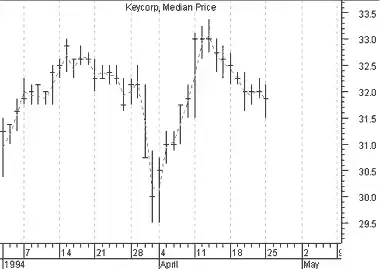

Median Price
Overview
The Median Price indicator is simply the midpoint of each day's price. The Typical Price and Weighted Close are similar indicators.
Interpretation
The Median Price indicator provides a simple, single-line chart of the day's "average price." This average price is useful when you want a simpler view of prices.
Example
The following chart shows the Median Price indicator (dotted line) on top of Keycorp's bar chart.
 Calculation The Median Price indicator is calculated by adding the high and low price and dividing by two.